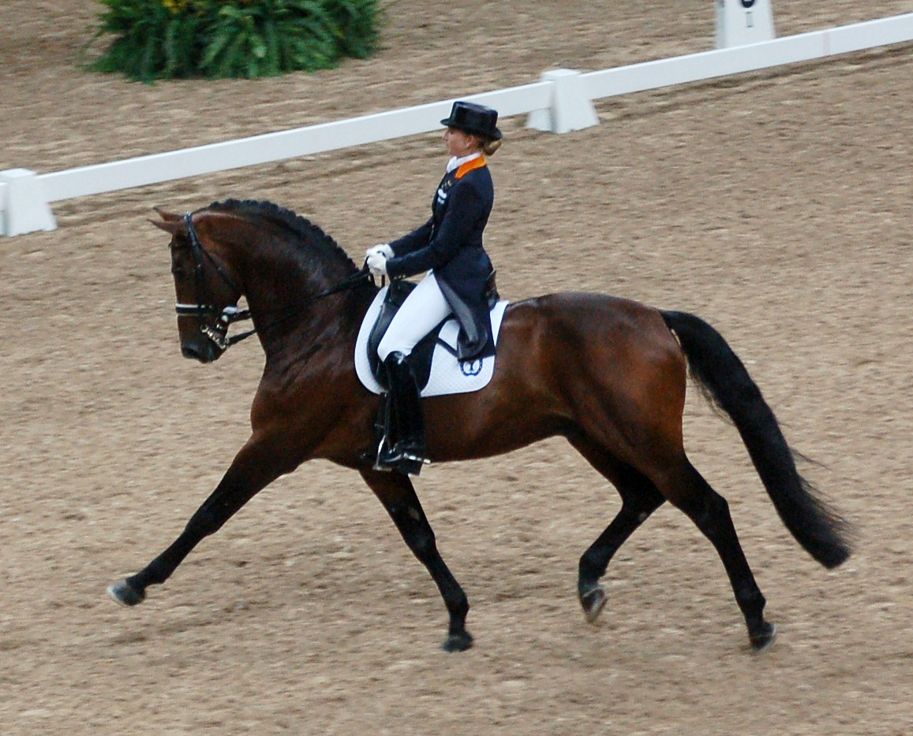

Hunter jumper horse riding style is an english style equestrian sport where a horse and rider complete a course of over fence jumping. Hunter jumpers stands for two things, hunters is about the riders control over the hourse and how the rider manipulates the horse over the fences in a solif fluid ride. While jumpers are about speed rather than equitation, therefore jumpers are not looking perfect, but they are jumping fast. Both Hunters and Jumpers are navigating their horse over fences in a course, they simply are just doing it in different styles. Both styles result in winning a ribbon if you are in the top 6 of the class which are your other competitors. To win Hunters you must have good equitation and/or posture while maintaining the horses speed and power over jumps. To win in Jumpers, you must having the quickest time with no faults which means knocking a rain down on the fences as you jump.
Dressage is a type of horse riding from France. The well known nickname for dressage is "ballet on horseback". Dressage centers around the horses stamina, athletic capabilities, flexability, and obedience, while also focusing on the riders use of clear signals of instructions for the horse to carry out. Dressage primarily focuses on the communnication between horse and rider. The horse and rider essentially dance in an arena that measures 20 by 60 meters with marked perimeter letters to help keep the rider on track all while being observed by several judges who will rate the performance from 1-10, 10 being the highest, the horse and rider with the most top ratings/ points in declared champion.
